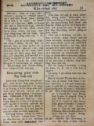
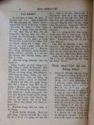
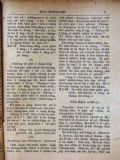
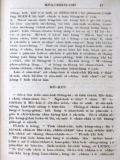
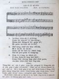

Languages
台文
｜
中文
｜
日本語
｜
English
字體
小
｜
中
｜
大
首頁
/
白話字數位典藏
白話字數位典藏全文檢索
查詢模式
選擇年代
清國時代(1885-1895)
日本時代(1895-1945)
戰後(1945-1969)
1885-1895
1896-1905
1906-1915
1916-1925
1926-1935
1936-1945
1946-1955
1956-1965
1966-1969
1970-1980
1980-1990
1990-2000
2000-2010
2010-
選擇文類
詩
散文
小說
戲劇
傳記
選擇作者
陳清忠
陳清義
編輯部
柯設偕
吳天命
明有德
偕叡廉
周天來
劉華義
王守勇
林茂生
陳添旺
王占魁
柯維思
賴仁聲
陳瓊琚
雪峰逸嵐
吳清鎰
郭水龍
蕭樂善
許水露
葉金木
陳金然
章王由
廖得
鄭連坤
潘道榮
楊士養
梁秀德
劉約翰
周淑慧
高金聲
林燕臣
黃六點
蔡愛義
許有才
主筆
巴克禮
陳鳩水
郭朝成
張基全
陳明清
陳能通
拾穗生
顏振聲
卓恆利
傳道局
胡文池
劉主安
鄭兒玉
Google Search
Yahoo Search
全部
刊名
標題
標題(教羅)
全文
全文(教羅)
作者
第43頁，共93頁(共1,848筆資料) 0.60839200019836sec
1
...
41
42
43
44
45
...
93
To Page
GO
文字列表
圖文列表
排序
日期
文類
刊名
作者
影像
[1928-5 台灣教會報/芥菜子 文類-小說 作者-陳清忠/Tân Chheng-tiong ]
一條線 [ Chi̍t tiâu soàⁿ ]
一條線 陳清忠 1928.05.01 518卷(芥菜子第27號) p.15-17 下面所譯這篇是法蘭西的文學者Guy de Maupassant (1850－1893)所寫--ê，不止有通做咱的教示，請大家毋通看做是心適的故事，因為伊寫這篇的確毋是欲予人讀心適；伊的目的是愛讀者目睭著金，毋通予這个烏暗的世間的影jia--去，致到來趁這个世間的款式。 一擺佇Kho-lia̍p-bí 的所在有做生理的鬧熱。農夫佮in 的婦人人對四方聚集來佇一个城市。做生理的所在chhiâng-chhiâng滾。－人叫來叫去，生理人大聲招呼人來買in 的物件，牛teh hán，狗teh吠。O͘-sū-...
[1928-5 台灣教會報/芥菜子 文類-散文 作者-陳清忠/Tân Chheng-tiong ]
兒童中心的基督教 [ Jî-tông tiong-sim ê Ki-tok-kàu ]
兒童中心的基督教 續接26號第15面 第六章 1928.05.01 518卷(芥菜子第27號) p.19-20 永遠é負債 前身紐約大學的總長Hin-lé博士，有著一本冊叫做「永遠的負債。」佇這本冊內面。伊對教育學的立場，為著兒童吐出大的氣焰。我看著這本冊第一感激我--ê，是彼句 「永遠的負債。」「永遠的負債！」Kiám毋是真豐富佇暗示(暗靜的教示) 的文字mah？咱對人所借金錢上的負債，無論怎樣，有還的義務。 英國有名的小說家O-ta Su-kok，為著出版事業來大負債，伊用怎樣來還，咱若讀伊的傳記，無一人毋感心佇伊的熱心。保羅講，「我有欠希臘人，異邦人，智識的人，愚戇的人...
[1928-6 台灣教會報/芥菜子 文類-散文 作者-陳清忠/Tân Chheng-tiong ]
兒童中心的基督教 [ Jî-tông Tiong-sim ê Ki-tok-kàu ]
兒童中心的基督教 陳清忠 1928.06.01 519卷(芥菜子第28號) p.15-16 第7章 (接前月第20面) 年年出世來世間。四百萬的囡仔欲怎樣？ 逐年佇這个世間有四百萬的囡仔出世，這个事實，真面目來想的人毋知有幾个？閣再chiah 的四百萬的囡仔，對佇爸母的不注意，以及社會不是的因端，致到貴重的身體來歸佇烏有，這款可憐的事，毋知有幾个teh想，這是社會的大問題？ 今仔日的社會，無管佇這世間欲有幾个囡仔來出世，閣in 的運命欲怎樣，深慮這款的事的人是真少。佇這个社會中無有比囡仔較軟弱--ê；無有比囡仔較著受幫贊--ê；閣再無有比囡仔較有將來--ê。實在囡仔...
[1928-8 台灣教會報/芥菜子 文類-詩 作者-陳清忠/Tân Chheng-tiong ]
佈道的詩 [ Pò͘-tō ê Si ]
佈道的詩 陳清忠 1928.08.01 521卷(芥菜子第30號) p.20 這擺的修養會吳牧師娘有備辦幾若首詩，佮傳道相佮鍛鍊；目的是愛做佈道的路用；不止好聽，閣再不止快學，阮下佇報紙，向望列位濟濟來採用。(本號代先下一首)。 No.1. 求主賜氣力 【樂譜】 求主這時賜氣力，求主這時賜氣力， 求主這時賜氣力，來充滿佇眾人。...
[1928-9 台灣教會報 文類-散文 作者-陳清忠/Tân Chheng-tiong ]
兒童中心的基督教 [ Jî-tông Tiong-sim ê Ki-tok-kàu ]
兒童中心的基督教 第8章 1928.09.01 522卷(芥菜子第31號) p.18-19 佇路加福音傳有濟濟囡仔佮婦人人的記事，是怎樣？ 人若讀賜福音傳就會知一項不止奇怪的事，就是佇路加彼本的內面有濟濟位記囡仔佮婦人人的事佇teh。 賜福音傳的記者，各國有伊的特色，所記多少有各樣，這是當然，無通奇怪的所在。總是路加欲寫基督的傳記的時，有佮別的 福音記者各樣，特別注意佇囡仔佮婦人人的事，這是啥物因端？拍算有深深的意思佇teh才著。關係這項事，Khu-lat-khu博士所講大大有理氣。伊講，路加teh欲寫基督的傳記的時，佇基督的死後，伊有踏入猶太的全地來研究所有基督的事跡。 基...

[1926-8 芥菜子 文類-散文 作者-陳清忠/Tân Chheng-tiong ]
(4)
淡中glee club達目的 [ Tām-tiong glee club Ta̍t bo̍k-tek ]
淡中glee club達目的 淡水中學音樂部 glee club 有志十名，為著京都開音樂會的都合，有比預定的期日較早一choā 船起身，就是搭 6月28號出航的 In-phoan丸。七月2號到神戶，彼下晡紲到京都。雖罔頭尾佇遐是9日久nā-tiāⁿ，iáu-kú有得著不止好的機會。彼中間有開5擺的音樂會，也有去kūn-hū不止濟所在見學。 其中通特記的，就是有去大阪參觀朝日新聞社，也有去無電放送局演奏。 本然打算愛踮較久，通看看較濟所在，不幸有人拄著破病，姑不將著較早轉來。七月11號離開神戶，搭 Lia̍p-hō͘丸，15號早起到基隆，...
[1926-8 芥菜子 文類-散文 作者-陳清忠/Tân Chheng-tiong ]
(2)
耶穌的十字架 [ Iâ-so͘ ê si̍p-jī-kè ]
耶穌的十字架 現時愛耶穌的天國的人，伊的數是濟，總是歡喜pē伊的十字架的人是到極少。 愛求耶穌慰安的人，也是濟，若是求伊的苦痛的人嘛是少。 有濟濟人佮耶穌同桌，總是少少人欲佮伊saⁿ-kap守禁戒，(禁戒) 萬人向望愛欲佮耶穌saⁿ-kap享樂，但是為著耶穌來忍受萬事的人是真少。 愛求耶穌所peh的餅的人是濟，若是歡喜lim伊的苦杯的人是少。 濟濟人尊敬伊的神跡，少少人忍受「恥辱的十字架。 無苦痛的中間，疼耶穌的人是真濟；閣再耶穌賞賜in 慰安的時，人人呵咾，人人感謝。毋kú設使耶穌若離開in tiap-á久，就隨時跋落不...
[1926-8 芥菜子 文類-散文 作者-陳清忠/Tân Chheng-tiong ]
(2)
名人的祈禱 [ Bêng-jîn ê kî-tó ]
名人的祈禱 （I） Samuel Johnson (1709－1784) O主ah，你的手掌管生佮死，對佇你的氣力我通得著徛在，也對佇你的恩典通得著赦免，求你用憐憫àⁿ落來看我。你所命令我著做的義務，到今我有放做袂要緊，空空過日，全然無勞碌來完成你的旨意，求你赦免我這款貧惰的罪。求你予我會記得逐日是你所賞賜--的，應該著照你的命令來用彼日。所以求你予7我深深反悔貧惰的罪，通對你得著恩典，也通經過，你猶饒我的性命佇世間的中間，也來勤勉勞碌佇你的聖旨，倚靠耶穌基督。心所願。 (II) Anselm (1033－1109) O我的主，我的上帝ah，求你賞賜我全心所意向愛欲得...

[1926-7 芥菜子 文類-散文 作者-陳清忠/Tân Chheng-tiong ]
(4)
著怎樣來受聖神 [ Tio̍h cháiⁿ-iūⁿ lâi siū Sèng Sîn ]
著怎樣來受聖神？ I 上帝約束欲予人。上帝是靈，是人格；上帝是hùn出的思想。所以著顯現佇伊本身以外。彼个就是默示，就是天的啟示。若是按呢伊怎樣來發表？是用雷tân？抑是用野獸？毋是。上帝用人將伊的喙來顯出。伊揀第一聖，第一溫純的人做器具來指示伊的所想，伊的熱情，伊的計畫佮將來所欲生起的事。 先知就是伊的器具，伊的通譯；所講kan-ta上帝nā-tiāⁿ。伊佇以西結(36章有約束欲用清的水hiù--咱）：－ 「用清水hiù恁，予恁成清氣，見若拜偶像，行污穢的代誌，攏總洗除去。」以賽亞35章有用真媠的話講出：－ 「曠野無水的所在欲put-íⁿ，親像山chû-ko，的確有歡喜唱歌...
[1926-6 芥菜子 文類-小說 作者-陳清忠/Tân Chheng-tiong ]
(2)
一滴一滴的水 [ Chi̍t tih chi̍t tih ê chuí ]
一滴一滴的水 (續接前號) (11) 守錢奴 一个守錢奴將伊一tè金角 tâi佇土內，也逐日去遐看來做快樂。有一日知伊彼tè金角予人偷提去，真傷悲，就出大聲吼。隔壁的人看見伊按呢就共伊講。「請免傷悲，提這tè石頭tâi佇彼空，也想彼tè是金，就彼tè石頭，對你來看佮黃金是相同；因為黃金佇彼空的時，你都攏無用--伊。」 教示 咱不時teh聽寶貝的真理，毋知有幾个提利用彼个寶貝？若是有入無出，心內所積聚的真理，佮彼tè石頭有啥物kò樣？！著行！！ (12) 驢佮螽斯 (蟋蟀) 這日，一隻驢仔聽見濟濟隻螽斯 teh唱歌，in 的聲音予...

[1926-5 芥菜子 文類-散文 作者-陳清忠/Tân Chheng-tiong ]
(3)
轉去亞西亞 [ Tńg-khì A-se-a ]
轉去亞西亞！ 轉去，亞西亞！亞西亞是宗教的本所在，是宗教的故鄉！ 佛教佇亞西亞出--的，基督教也是亞西亞生--的。喜馬拉的山跤，加利利的湖邊，實在是世界二大宗教的發源地！ 基督教雖罔是出世佇亞西亞，iáu-kú隨時傳入歐羅巴；這敢通歡喜的事mah？大信，基督-教入歐洲是反轉拄著慘害。設使保羅若無入歐洲若對印度，支那代先來傳毋知怎樣？ 歐洲的文明是科學tek，是機械tek。亞西亞的文化是超越理性tek(超越理性的= phoâⁿ過理性--的)，是靈tek。基督教歐洲人的頭腦是發達(理=理氣)，智(智=智識)，分析(分析=拆開)彼方面。所以連有活命，零的基督教紲共伊分析；致到...
[1926-1 芥菜子 文類-散文 作者-陳清忠/Tân Chheng-tiong ]
(6)
成聖 [ Chiâⁿ-sèng ]
成聖 「人若毋是成聖袂會見著主」 希伯來12章14節。 人已經得著基督ê拯救，著koh進一步來想成聖ê恩典。 (A) 著求成聖ê理由，thang想有5項：－ 1. 成聖是上帝所命令。 「我是聖，恁也著成聖」「恁著盡心、盡性、盡意、盡力疼主你ê上帝；也著疼別人親像家治。」上帝無濫糝命令人，伊ê命令定著有合佇人ê生活，也人穩當行會到ê；koh再是人應該著行--ê。 2. 成聖是上帝佇聖冊中所約束--ê。「主來世間是為著欲除咱ê罪過...
[1926-1 芥菜子 文類-散文 作者-陳清忠/Tân Chheng-tiong ]
(3)
基督ê遺言 [ Ki-tok ê uî-giân ]
基督Ê遺言 「細囝ah，我猶有霎仔久kap恁佇teh」 約翰13章33節。 耶穌kap伊ê學生路尾擺相kap食晚餐ê時，猶大ê奸計有予耶穌看出，所以猶大袂得thang相kap坐桌，就離開in，去準備欲掠耶穌。後來賰11个學生。耶穌無隱囥講伊ê運命予in聽，也佇這个機會續安慰勉勵--in。耶穌kā in講：「Taⁿ人子得著榮光，上帝也teh欲對伊來得著榮光」。總是耶穌所所掛心ê就是所賰ê 11人。耶穌想in量必會失望、餒志，所以伊利用這个機會講伊ê遺言來安慰in。伊ê遺言是...
[1926-1 芥菜子 文類-散文 作者-陳清忠/Tân Chheng-tiong ]
(4)
批評人 [ Phoe-phêng Lâng ]
批評人 「莫得批評，人chiah免拄著批評。」 馬太7:1節 這句話對咱做真大警戒。批評人，就是講人ê歹喙；這款ê事不但是人真快犯ê罪，也是人自然所teh犯ê罪。無論佇集會ê所在，á是相kap食茶ê時，或是佇路裡相kap行，不管上流ê人、下流ê人所相kap談會ê中間，第一會予人感趣味ê，就是講人ê是非。尚且所批評ê，講人ê歹是比講ê好khah常，khah有趣味ê款。有時用宛轉ê方...

[1926-1 芥菜子 文類-散文 作者-陳清忠/Tân Chheng-tiong ]
(3)
魔鬼 [ Mô͘-kuí ]
魔鬼 「所以恁著順服上帝；也著抵敵魔鬼，伊就走閃恁。」雅各4章7節。佇宇宙間有魔鬼ê實體á無，這是屬佇神學上、哲學上ê問題。總是照世間人ê經驗，逐人有感著佇in本身以外有一款真強烈ê惡的。所以照世人經驗範圍內，惡魔ê存在是無thang僥疑ê事實。 彼得有講：「著節制、著警醒；恁ê對敵就是魔鬼，親像哮ê獅，四界行，teh找所thang吞食--ê。－」彼得(1) 5:8. 魔鬼欲陷害人ê時陣，猶毋捌發現伊所會進出ê根本，連欲想像伊&e...
[1926-1 芥菜子 文類-散文 作者-陳清忠/Tân Chheng-tiong ]
(3)
成功無短路 [ SÊNG-KONG BÔ TÉ-LŌ͘ ]
成功無短路 「彼時耶穌予聖神chhōa到曠野，欲受魔鬼試。」 馬太4章1節。 欲造成品性，無有近ê路；ài得著近路ê，攏是做誘惑ê根源。亞當kap夏娃論in ê智慧ê發達是親像囡仔。對佇食果子，in想隨時ài欲得著彼个智慧。智慧是好ê物，猶久袂會佇一時陣來得著。智慧是親像一个媠ê記念塔，起佇忍耐、勞苦ê地基頂。亞當kap夏娃行短ê路ài欲得著智慧，反轉續陷落罪。 主ê受試猶原有相同ê教示佇teh。「人會...
[1926-1 芥菜子 文類-散文 作者-陳清忠/Tân Chheng-tiong ]
(3)
神Ê軟chiá? [ SÎN Ê NŃG-CHIÁⁿ ]
神Ê軟chiáⁿ 咱基督徒所信ê神是真軟chiáⁿ ê神－據在人侮辱；予對敵歹款待，無ke講一句話，也無想欲報仇；尚且佇十字架頂來受見笑ê死。 無親像thang驚惶ê鬼將軍teh處治伊ê對敵，彼款ê神；也無親像大膽ê外科醫，無想患者ê艱苦，直刣、直割。反轉ná家己予人割ê款，會感著別人ê艱苦。 伊無親像強摃，摃破咱ê心門，強強入來。伊ê身軀予露水沃澹，徛佇門口teh細聲叫。伊無捲...
[1926-1 芥菜子 文類-小說 作者-陳清忠/Tân Chheng-tiong ]
(4)
一滴一滴Ê水 [ CHI̍T TIH CHI̍T TIH Ê CHUÍ ]
「一滴一滴Ê水」 (1) 老ê獅 有一隻真老ê獅，倒佇土腳teh欲死 也以前捌予這隻獅處治ê獸，幾若隻來欲kā伊報仇。山豬就用伊ê牙撟伊ê腹肚 牛就用角觸伊ê kái邊；驢á也到，cha伊已經無危險，就越lìn轉，用兩支ê後跤，出力對面就kā伊踢去。可憐ê老將軍忍袂稠就haiⁿ一聲講「Ah，予你這扮貧賤ê獸，用腳來踢，實在比死一百遍khah艱苦！」 教示 陷害人ê人，著會記得伊後來也會拄著這款ê運...
[1926-5 芥菜子 文類-散文 作者-陳清忠/Tân Chheng-tiong ]
(3)
一日一世人 [ Chi̍t-ji̍t chi̍t-sì-lâng ]
一日一世人 「一日一世人」這句是甚物意思？這句全然毋是深的話，是淺現的話。就是想咱大家佇早起時出世，也臨終佇暗時；一日是咱的一世人。 怎樣按呢想？是因為昨昏已經過了，明仔日猶未來；過了的昨昏，未來的明仔日攏毋是咱的；kan-ta 今仔日是nā-tiāⁿ；所以著盡力佇今仔日一日。 昨hng已經過了，無論怎樣傷悲，怎樣懺悔，斷斷無閣來。 明仔日猶未來，到底會來，袂來，毋是咱所會知。下昏安眠，明仔早起精神，kiám-chhái全世界攏變做烏暗；甚物人敢講明仔日，日頭會閣出現？！ Ah，昨昏已經過了！明仔日猶未到！生，死；...

[1926-1 芥菜子 文類-詩 作者-陳清忠/Tân Chheng-tiong ]
(1)
暗時Ê祈禱 [ ÀM-SÎ Ê KÎ-TÓ ]
暗時Ê祈禱 REV. RAY PALMER .IRA D. SANKEY. （五線譜） 1. 離開罪惡ê世境， 阮來朝見你面前： 懇求上帝予阮見， 賜阮恩典ná加添。 2. 天頂星辰金熾熾， 毋是家己會按呢； 阮若無靠你chhiō光， 暗暝包阮佇中央。 3. 真理ê光會khah贏， 烏暗、煩惱kap驚惶； 願主將光普照阮， 安然徛在到永遠。 注意。 頂面所寫ê譜，kap咱平時佇養心神詩teh吟ê譜有各樣。這首是專專查甫聲--ê...
第43頁，共93頁(共1,848筆資料)
1
...
41
42
43
44
45
...
93
To Page
GO
數位典藏國家型科技計劃
拓展台灣數位典藏計畫
版權所有 國立台灣師範大學 台灣文化及語言文學研究所©2008
10610 台北市和平東路一段162號│TEL 02-7734-5516│Fax 02-2358-2461
計劃簡介
典藏特色
執行架構
計畫典藏數位化流程
成員介紹
台灣白話字發展簡介
巴克禮牧師與《台灣教會公報》
廈門話字典-杜嘉德
白話字教學-打馬字
中國南方白話字發展
台灣基督教長老教會簡表
台灣基督教長老教會教會歷史委員會
《北部台灣基督長老教會教會ê歷史》
關於陳清忠
白話字文學：台灣文學的早春